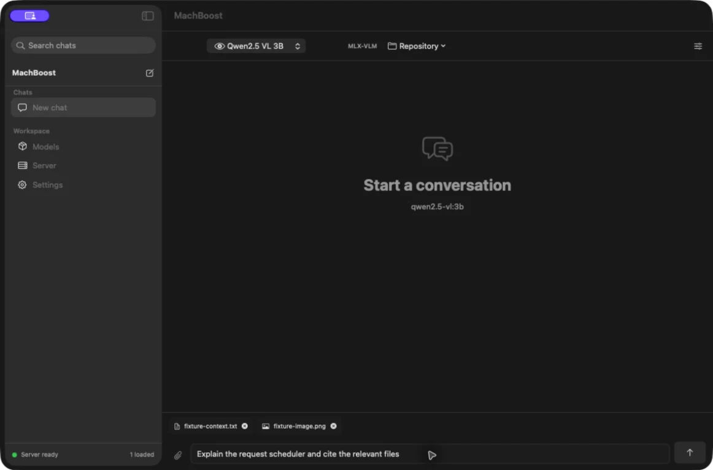

Local-first · Apple Silicon · Open source
MachBoost
Turn one powerful Mac into a private AI endpoint for your team, with resident models, repository-aware answers, and measured acceleration.
Unsigned community preview · arm64 · macOS 14+
Native control surface
Your Mac becomes the inference server.
Chat locally, keep models resident, attach persistent context, index a codebase, or serve the same runtime through familiar APIs.

-
Repository intelligence
Index tracked source once, retrieve focused evidence per question, and share the reusable repository prefix across independent team threads.
-
Resident serving
Keep multiple models warm behind one bounded, tenant-fair gateway with cancellation, employee limits, and resource metrics.
-
Text and vision
Run MLX and MLX-VLM models with persistent files and images that remain attached until you remove them.
-
Drop-in APIs
Connect existing tools through OpenAI- and Ollama-compatible endpoints or use the Python client directly.
Team Gateway
One Mac. Your team's coding agents.
Give each employee a scoped key and point Cline, Kilo Code, or another OpenAI-compatible client at the same private endpoint. Models stay resident while MachBoost enforces model access, concurrency, request rates, and fair queueing between employees. Revision-aware memory can reuse validated repository knowledge without exposing private work, while a shared workspace prefix avoids repeating the same repository prefill in every employee thread. Budgeted external providers remain an explicit fallback.
Team Gateway guide- Identity
- Scoped keys
- Admission
- Tenant-fair
- Protocols
- OpenAI + Ollama
- Memory
- Private + shared
export OPENAI_BASE_URL="http://TEAM-MAC:11435/v1"
export OPENAI_API_KEY="mbk_employee_key"Govern access
Model allowlists, scoped keys, per-minute limits, and revocation from the native app.
Reuse reviewed knowledge
Keep unfinished work private, publish validated team memory, and reject stale repository revisions.
Route, inspect, evaluate
Apply provider budgets and transient fallback, inspect local traces, then evaluate selected requests.
Measured, not hand-waved
Speed where expensive work can be skipped.
MachBoost can reuse exact prefixes or reduce target decode passes on selected verified-decoding models. It does not claim every request, model, or prompt becomes faster.
| Workload | Model | Native | MachBoost | Median | Validation |
|---|---|---|---|---|---|
| Fresh unique decode | Qwen3.5 4B BF16 | 29.36 tok/s | 48.52 tok/s | 1.65× | 3/3 exact at 128 tokens |
| Fresh unique decode | Qwen3.5 9B BF16 | 16.55 tok/s | 26.44 tok/s | 1.61× | 2/3 exact; experimental |
| New adjacent code question | Qwen2.5 7B 4-bit | 7.034s | 5.377s | 1.31× | 3/3 byte-identical |
| New unrelated repo question | Qwen2.5 7B 4-bit | 5.995s | 4.217s | 1.43× | 3/3 byte-identical |
| Repository prefill only | Qwen2.5 7B 4-bit | 2.306s | 0.605s | 3.84× | 3,269 / 4,243 tokens reused |
| Exact deterministic replay | Qwen2.5 7B 4-bit | 2.474s | 0.091s | 28.6× | Identical requests only |
| Repeated-image matrix | Six Qwen models | 72 paired requests | 13.51× | 100% expected answers | |
| Semantic team memory | Qwen2.5 7B 4-bit | 4/8 rubric | 5/8 rubric | +0.239s | Context result, not speed |
| First-view control | Qwen3-VL | No reusable prefix | 0.99× | No acceleration claim | |
The production-shaped repository audit used an 8,754-file private monorepo, independent standalone threads, alternating order, and the same loaded MLX model, weights, prompts, and tokenization within each pair. Private paths, prompts, and outputs are not published. Decode time did not improve. The fresh-decode row compares the same BF16 target weights at a fixed 512-token output length using the shippable runtime; prompt medians range from 1.31× to 2.43×, and its three 128-token validation prefixes match. The same-weight 9B BF16 row ranges from 1.58× to 2.42×, but its output gate found a mismatch; a faster 9B 4-bit control also diverged. Exact replay and semantic memory are separate contracts. The visual figure is the median of six model-level paired medians.
How it works
Reuse the expensive part safely.
-
01
Load once
The resident server keeps selected MLX models in unified memory.
-
02
Build stable context
Repository maps, documents, images, and chat prefixes are organized so exact reusable regions remain identifiable.
-
03
Restore model state
Compatible MLX caches skip repeated prefill work while preserving the same target-model generation path.
-
04
Retrieve what changed
Focused evidence and the new question are evaluated normally, with citations returned to the client.
Community preview
Download. Drag. Approve.
The preview DMG is free and ad-hoc signed. Apple has not notarized it, so macOS asks you to approve the app manually after download. Community updates open GitHub Releases and may require the same approval again.
-
1
Download the DMG
Apple Silicon and macOS 14 or newer are required.
-
2
Drag MachBoost to Applications
The bundled runtime means no Homebrew or Python setup.
-
3
Attempt the first launch
macOS will block the unidentified community build initially.
-
4
Choose Open Anyway
Go to System Settings → Privacy & Security, then approve MachBoost. Later launches of that installed version open normally.
Use your existing tools
One local endpoint.
The app and CLI speak through the same daemon. Point OpenAI-compatible clients at MachBoost or call the Ollama-style routes directly. Loopback works only on the host Mac; authenticated LAN mode displays a reachable address and token for teammates on the same private network.
from openai import OpenAI
client = OpenAI(
# Same Mac. For teammates, use the LAN URL shown in Server > Developer.
base_url="http://127.0.0.1:11435/v1",
api_key="machboost"
)
response = client.chat.completions.create(
model="qwen2.5:3b",
messages=[{"role": "user", "content": "Explain this repo"}]
)machboost serve
machboost pull qwen2.5-coder:7b
machboost create company-coder --from qwen2.5-coder:7b --option num_ctx=8192
machboost run company-coder